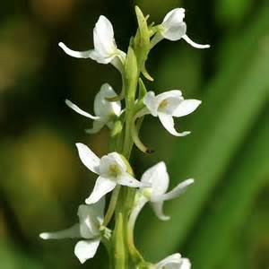

There are many flowers on Cape Cod that are in danger of becoming extinct.
 The place where I first saw bog asphodel—and where it is still present—is called Webbs Mills, located on Route 539 in Greenwood State Forest (Ocean County), about five miles south of the intersection of Routes 70 and 539, or about 6.5 miles north of the intersection of Routes 72 and 539. There’s no road sign which identifies it as such, but it is marked on the Hagstrom Ocean County map and also appears on the southeast corner of the Whiting USGS quadrangle. Look on the eastern side of the road for an open area of white sand and muck traversed by a boardwalk. At speed it is easy to miss, so if you do see it as you flash by and have to turn around, just remember that the often soft shoulders of Pine Barrens roads just love to swallow wheels. Webbs Mills, which has given its name to a branch of Cedar Creek, has been used as a classroom for students and naturalists for decades, and is home to many representative Pine Barrens plants: pitcher plant, sundews, golden crest and golden club; foxtail, Carolina, and bog (Lycopodium appressum) clubmosses; curly grass fern, a number of bladderworts, turkey beard, grass pink and rose pogonia, milkworts, pipeworts, sandwort, St. Peter’s-wort, St. John’s-worts, pyxie, sand-myrtle, yellow-eyed grasses, cottongrass, beaked rushes, and true rushes (Juncus spp.). With luck, late in the evening or on still, gray, misty days, you might even get to hear the extraterrestrial quonking of Pine Barrens treefrogs. This is one Pine Barrens bog where you can see things without getting wet or mucky up to your waist, and with little or no impact on the habitat—just remember to stay on the boardwalk and that picking flowers or plants is illegal on state property. (In field botany—like embryonic birding seventy years ago—it’s no longer necessary to collect in order to identify.)
A first-time sighting of the bog-candle in full flower leaves
the beholder impressed by its beauty and size. Decorating a
three to four foot high, leafy spike are dozens of snow white
flowers. Their outstretched lateral sepals give the flowers a
curious look resembling little Caspar the Friendly Ghosts or
flying nuns. These odd blossoms are a delight from an olfactory
aspect as well, exuding the spicy fragrance of cloves. This
feature gives it the name "scent bottle' in the northern
Maritimes.
There is but one colony of bog candles on Cape Cod, an historic
site in East Sandwich which has been watched closely by
botanists for many years. The habitat is thick muck formed by
spring seeps from a clay bank. There may be a buffering agent or
calcium depost, (perhaps from shells in an ancient Indian
midden) to explain how this plant became established in so
acidic and otherwise hostile an environment as Cape Cod.
This species is rare throughout the state, with only four
recorded sites presently known in Massachusetts*.